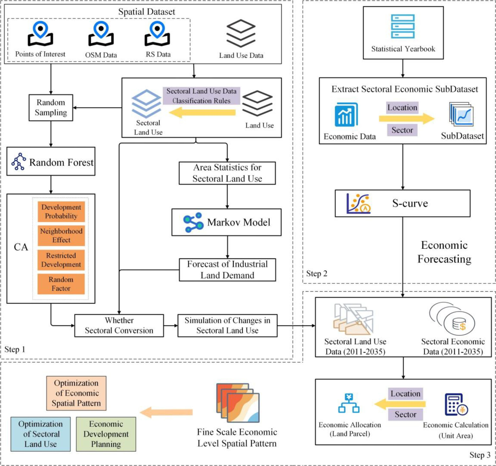
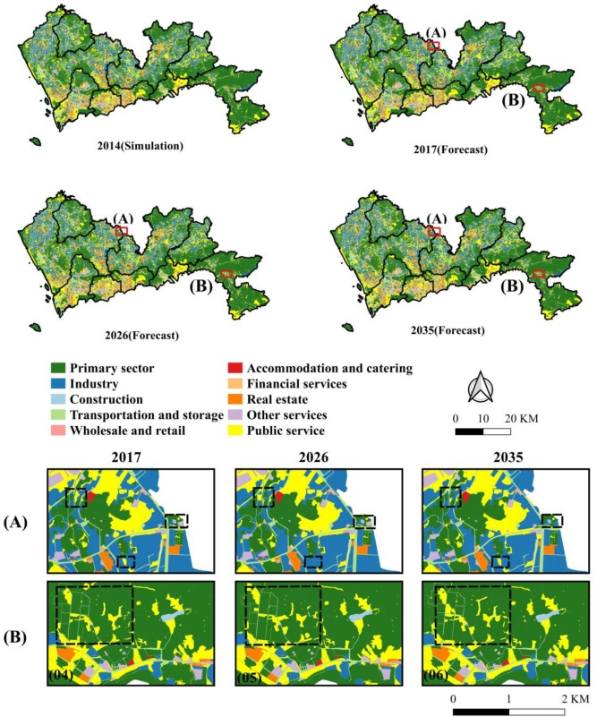
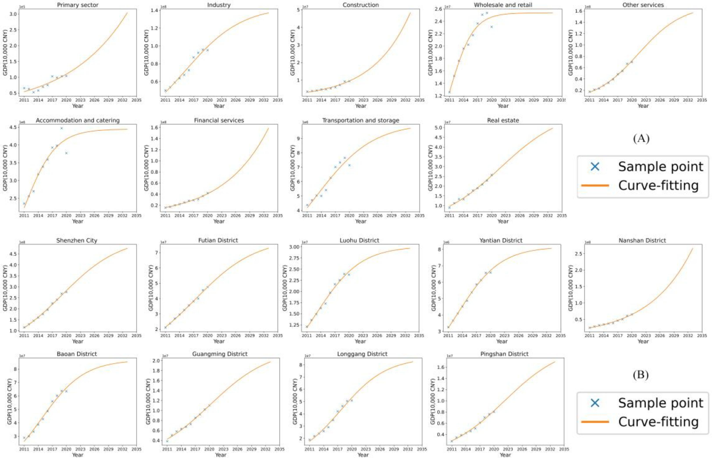
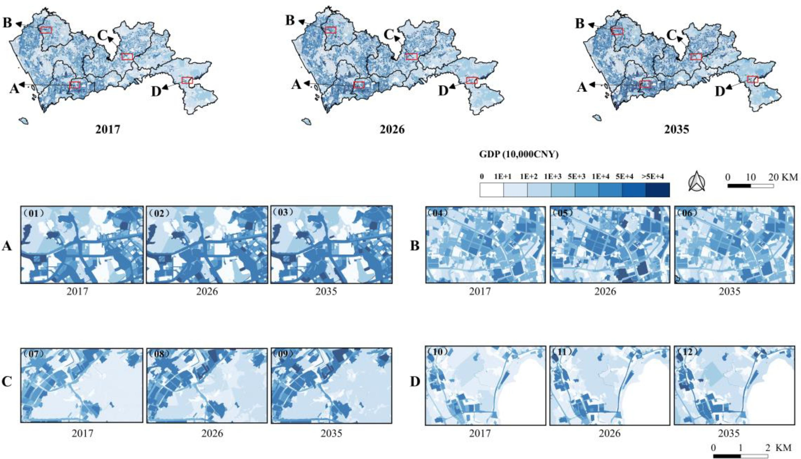
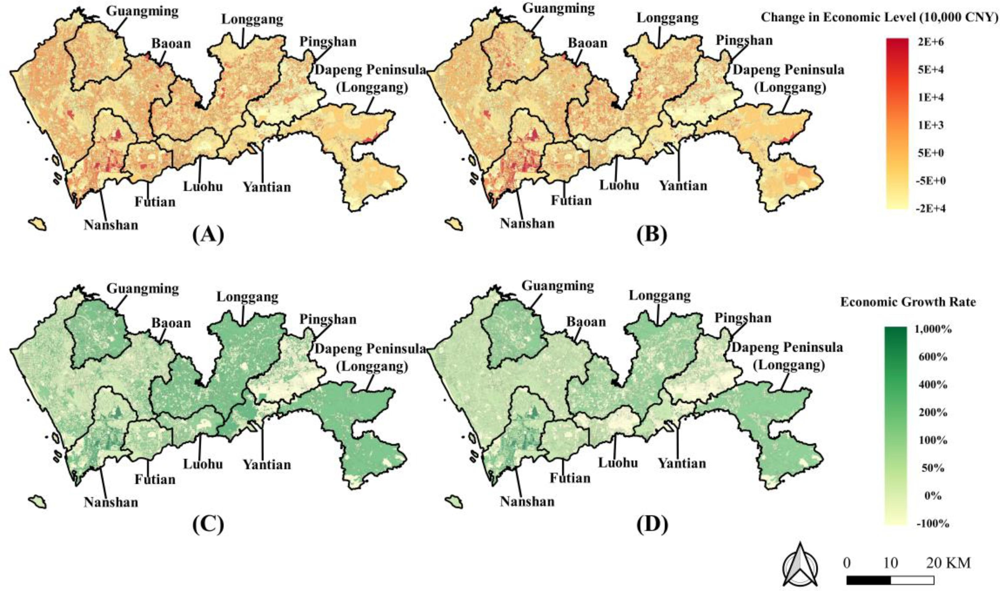

It is important to measure uncoordinated regional urban economic development to help guide government policy. However, previous models have often struggled to capture the fine-grained spatiotemporal characteristics of economic development, thereby failing to provide insight into the fine-scale patterns. Sectoral structure and its evolution are strongly related to economic development and provide finer spatial information. Therefore, this paper proposes a framework for forecasting the spatiotemporal evolution of urban economic development at the cadastral parcel scale based on sectoral land use dynamics modeling and the S-curve economic model. The results of the case study conducted in Shenzhen, China, show good performance (FoM = 0.182, average R² = 0.748, median R² = 0.877). The sectoral structure in high-economic-level areas was found to be more balanced, and the economic volume tended to increase more. In contrast, sectoral land use types change more frequently in low-economic-level areas, and the economic growth rates are generally higher due to their lower economic base. Without government intervention, disparities in simulated economic volumes between regions will continue to widen in the short term. Hence, the government is encouraged to consider optimizing the sectoral structure in low-economic-level areas to promote coordinated regional economic development.
Regional economic development is a key issue in urban studies and urban planning. Measuring uncoordinated regional economic development is important for guiding government policy. However, previous models have often struggled to capture the fine-grained spatiotemporal characteristics of economic development, thereby failing to provide insight into the fine-scale patterns.
Sectoral structure and its evolution are strongly related to economic development and provide finer spatial information. The vector cellular automata (VCA) model, based on cadastral parcel data, can accurately represent the irregular shape of actual land use, leveraging the high spatial granularity of cadastral-scale land use data. This provides an opportunity to model economic development at a fine-grained scale.
This paper proposes a framework for forecasting the spatiotemporal evolution of urban economic development at the cadastral parcel scale based on sectoral land use dynamics modeling and the S-curve economic model. The framework couples land use dynamics simulation with economic development forecasting, addressing the problem of the coarse-scale spatial distribution of economic forecasting portrayed in the past.
Shenzhen City, China, is taken as the study area. Shenzhen is a special economic zone located in Guangdong Province, China. It is an emerging and rapidly developing city that governs 9 administrative regions and 1 new district. In the process of urbanization, it emphasizes the efficient and intensive use of land resources.
This paper uses sectoral land use data from 2011 and 2014, including primary, secondary, and tertiary sector land use types. The data comes from the Shenzhen Planning and Natural Resources Bureau cadastral plot data. Spatial auxiliary variables are also used for urban land use dynamic modelling.
Fig. 3 illustrates the workflow of the proposed framework. The framework consists of two main components: (1) Sectoral land use dynamics simulation based on VCA, which models the spatiotemporal evolution of sectoral land use at the cadastral parcel scale; (2) Economic development forecasting based on the S-curve model, which predicts the economic level of each parcel according to its sectoral land use type, area, and administrative district.

The VCA model is used to simulate sectoral land use dynamics. The model calculates the development probability of each parcel based on spatial auxiliary variables and neighborhood effects. The sectoral land use types include primary sector (agriculture, forestry, etc.), secondary sector (industrial, construction), and tertiary sector (commercial, financial services, public services, residential).
The S-curve (logistic curve) is used to model the relationship between economic development level and sectoral structure. The economic level of each parcel is forecasted according to three attributes: sectoral land use type, area, and the administrative district to which it belongs. The S-curve model captures the nonlinear relationship between economic growth and sectoral structure evolution.

To evaluate the simulation performance, this paper applied Figure of Merit (FoM) for land use simulation accuracy and R² for economic forecasting accuracy. The case study in Shenzhen shows good performance (FoM = 0.182, average R² = 0.748, median R² = 0.877).
The simulated results of the sectoral land use dynamics indicated a good performance (FoM = 0.182), which shows that the results can be used to analyze the spatial distribution and temporal change characteristics of the sectoral structure of urban land at a fine scale.
The economic forecasting model shows good performance with average R² = 0.748 and median R² = 0.877. The forecasted economic growth for each sector in each region reveals that the sectoral structure in high-economic-level areas is more balanced, and the economic volume tended to increase more.

According to the analysis, the sectoral structure in higher-economic-level areas, such as Futian District, Luohu District, and Nanshan District, is more balanced and corresponds to a higher economic level than other districts. The lands in the low-economic-level areas, such as Pingshan District and Dapeng Peninsula, are dominated by the primary sector with a lower economic level.

From the temporal perspective, the overall economic level of Shenzhen has been increasing year by year on the macro scale. However, at the micro scale, the economic level of the low-economic-level regions has been increasing more significantly than that of the high-economic-level regions. The largest GDP increase is found in some strong economic areas (i.e., Nanshan District and parts of Yantian District). Without government intervention, disparities in economic volumes between regions will continue to widen in the short term.

This paper proposes a framework for predicting the spatiotemporal evolution of urban economic development at the fine-grained cadastral parcel scale, considering sectoral and locational factors, to portray fine-scale economic development. The framework makes the following two contributions: 1) The framework introduces the land use dynamics simulation model for economic forecasting. 2) It can generate an accurate fine-scale spatial distribution of economic development.
This study couples land use dynamics simulation and sectoral structure economy, addressing the problem of the coarse-scale spatial distribution of economic forecasting portrayed in the past. The simulated results of the sectoral land use dynamics indicated a good performance (FoM = 0.182), which shows that the results can be used to analyze the spatial distribution and temporal change characteristics of the sectoral structure of urban land at a fine scale.
However, the study needs to be further improved. First, in the process of modeling urban land dynamics, built-up factors such as commercial facilities and transportation facilities are seen as the main contributors, but the influence of some natural factors on changes in sectoral land use types is not considered. Second, the spatial neighborhood effect may exist between the economic growth of a parcel and its neighborhood, which is not currently modeled. In the future, the proposed framework will be improved by introducing multisource spatial data to determine the spatial neighborhood effect of economic growth.
This paper proposes a framework for calculating and forecasting the spatiotemporal economic levels in megacities at the fine-grained cadastral parcel scale. The main contributions are:
@article{YAO2023103602,
title = {Fine-grained regional economic forecasting for a megacity using vector-based cellular automata},
journal = {International Journal of Applied Earth Observation and Geoinformation},
volume = {125},
pages = {103602},
year = {2023},
issn = {1569-8432},
doi = {https://doi.org/10.1016/j.jag.2023.103602},
url = {https://www.sciencedirect.com/science/article/pii/S1569843223004260},
author = {Yao Yao and Haoyan Zhang and Zhenhui Sun and Linlong Li and Tao Cheng and Ying Jiang and Qingfeng Guan and Dongsheng Chen}
}
本文内容由 DeepSeek-V4 Pro AI 自动总结生成，仅供参考。详细信息请以原文为准。
Content on this page is AI-summarized by DeepSeek-V4 Pro. Please refer to the original publication for authoritative information.